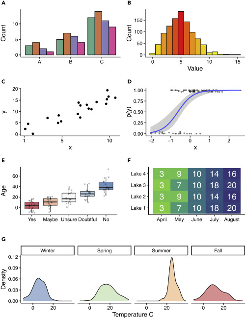

Lecture: A guide to visualisation
Contents
Lecture: A guide to visualisation#
This week we will focus on data visualisation. Data visualization is a graphical representation of data or information—for example, taking raw numbers from a spreadsheet and transforming that into a bar or line chart. Using data visualizations helps you to easily understand and analyze trends and outcomes within your data.
Selecting the right graphical representation depends on the story you are trying to tell. You can choose any visualization and assume it’ll do the trick, but it’s worth the time and effort to select and customize the right visualization for long-lasting impact.
Learning objectives week 6
What are best practises in data visualisation
How can we use python to visualise our data
An introduction to visualization#
Visual learning is one of the primary forms of interpreting information, which has historically combined images such as charts and graphs (see Box 1) with reading text. Technology has also enhanced visual presentation, in terms of the ability to quickly create complex visual information while also cheaply distributing it via digital means (compared with paper, ink, and physical distribution).
Terminology
The terms graph, plot, chart, image, figure, and data visual(ization) are often used interchangeably, although they may have different meanings in different instances. Graph, plot, and chart often refer to the display of data, data summaries, and models, while image suggests a picture. Figure is a general term but is commonly used to refer to visual elements, such as plots, in a scientific work. A visual, or data visualization, is a newer and ostensibly more inclusive term to describe everything from figures to infographics. Here, I adopt common terminology, such as bar plot, while also attempting to use the terms figure and data visualization for general reference.
Effective figures suggest an understanding and interpretation of data; ineffective figures suggest the opposite. Although the field of data visualization has grown in recent years, the process of displaying information cannot—and perhaps should not—be fully mechanized. Much like statistical analyses often require expert opinions on top of best practices, figures also require choice despite well-documented recommendations. In other words, there may not be a singular best version of a given figure. Rather, there may be multiple effective versions of displaying a single piece of information, and it is the figure maker’s job to weigh the advantages and disadvantages of each. Fortunately, there are numerous principles from which decisions can be made, and ultimately design is choice.
Here we outline a few important principles when it comes to data visualization.
Principle #1 Diagram First#
The first principle is perhaps the least technical but very important: before you make a visual, prioritize the information you want to share, envision it, and design it. Although this seems obvious, the larger point here is to focus on the information and message first, before you engage with software that in some way starts to limit or bias your visual tools. In other words, don’t necessarily think of the geometries (dots, lines) you will eventually use, but think about the core information that needs to be conveyed and what about that information is going to make your point(s). Is your visual objective to show a comparison? A ranking? A composition? This step can be done mentally, or with a pen and paper for maximum freedom of thought. In parallel to this approach, it can be a good idea to save figures you come across in scientific literature that you identify as particularly effective. These are not just inspiration and evidence of what is possible, but will help you develop an eye for detail and technical skills that can be applied to your own figures.
Principle #2 Use an Effective Geometry and Show Data#
Geometries are the shapes and features that are often synonymous with a type of figure; for example, the bar geometry creates a bar plot. While geometries might be the defining visual element of a figure, it can be tempting to jump directly from a dataset to pairing it with one of a small number of well-known geometries. Some of this thinking is likely to naturally happen. However, geometries are representations of the data in different forms, and often there may be more than one geometry to consider. Underlying all your decisions about geometries should be the data-ink ratio, which is the ratio of ink used on data compared with overall ink used in a figure. High data-ink ratios are the best, and you might be surprised to find how much non-data-ink you use and how much of that can be removed.
Most geometries fall into categories:
amounts (or comparisons)
compositions (or proportions)
distributions
relationships.
Although seemingly straightforward, one geometry may work in more than one category, in addition to the fact that one dataset may be visualized with more than one geometry (sometimes even in the same figure).
Amounts or comparisons are often displayed with a bar plot (Figure 1A), although numerous other options exist, including Cleveland dot plots and even heatmaps (Figure 1F). Bar plots are among the most common geometry, along with lines, although bar plots are noted for their very low data density (i.e., low data-ink ratio). Geometries for amounts should only be used when the data do not have distributional information or uncertainty associated with them. A good use of a bar plot might be to show counts of something, while poor use of a bar plot might be to show group means. Despite the numerous reports on incorrect usage, bar plots remain one of the most common problems in data visualization.
Figure 1. Examples of Visual Designs. (A) Clustered bar plots are effective at showing units within a group (A–C) when the data are amounts. (B) Histograms are effective at showing the distribution of data, which in this case is a random draw of values from a Poisson distribution and which use a sequential color scheme that emphasizes the mean as red and values farther from the mean as yellow. (C) Scatterplot where the black circles represent the data. (D) Logistic regression where the blue line represents the fitted model, the gray shaded region represents the confidence interval for the fitted model, and the dark-gray dots represent the jittered data. (E) Box plot showing (simulated) ages of respondents grouped by their answer to a question, with gray dots representing the raw data used in the box plot. The divergent colors emphasize the differences in values. For each box plot, the box represents the interquartile range (IQR), the thick black line represents the median value, and the whiskers extend to 1.5 times the IQR. Outliers are represented by the data. (F) Heatmap of simulated visibility readings in four lakes over 5 months. The green colors represent lower visibility and the blue colors represent greater visibility. The white numbers in the cells are the average visibility measures (in meters).(G) Density plot of simulated temperatures by season, where each season is presented as a small multiple within the larger figure.
Compositions or proportions may take a wide range of geometries. Although the traditional pie chart is one option, the pie geometry has fallen out of favor among some18 due to the inherent difficulties in making visual comparisons. Although there may be some applications for a pie chart, stacked or clustered bar plots (Figure 1A), stacked density plots, mosaic plots, and treemaps offer alternatives.
Geometries for distributions are an often underused class of visuals that demonstrate high data density. The most common geometry for distributional information is the box plot19 (Figure 1E), which shows five types of information in one object. Although more common in exploratory analyses than in final reports, the histogram (Figure 1B) is another robust geometry that can reveal information about data. Violin plots and density plots (Figure 1G) are other common distributional geometries, although many less-common options exist.
Relationships are the final category of visuals covered here, and they are often the workhorse of geometries because they include the popular scatterplot (Figures 1C and 1D) and other presentations of x- and y-coordinate data. The basic scatterplot remains very effective, and layering information by modifying point symbols, size, and color are good ways to highlight additional messages without taking away from the scatterplot. It is worth mentioning here that scatterplots often develop into line geometries (Figure 1D), and while this can be a good thing, presenting raw data and inferential statistical models are two different messages that need to be distinguished.
Finally, it is almost always recommended to show the data.7 Even if a geometry might be the focus of the figure, data can usually be added and displayed in a way that does not detract from the geometry but instead provides the context for the geometry (e.g., Figures 1D and 1E). The data are often at the core of the message, yet in figures the data are often ignored on account of their simplicity.
Principle #3 Colors Always Mean Something#
The use of color in visualization can be incredibly powerful, and there is rarely a reason not to use color. Even if authors do not wish to pay for color figures in print, most journals still permit free color figures in digital formats. In a large study20 of what makes visualizations memorable, colorful visualizations were reported as having a higher memorability score, and that seven or more colors are best. Although some of the visuals in this study were photographs, other studies21 also document the effectiveness of colors.
In today’s digital environment, color is cheap. This is overwhelmingly a good thing, but also comes with the risk of colors being applied without intention. Black-and-white visuals were more accepted decades ago when hard copies of papers were more common and color printing represented a large cost. Now, however, the vast majority of readers view scientific papers on an electronic screen where color is free. For those who still print documents, color printing can be done relatively cheaply in comparison with some years ago.
Color represents information, whether in a direct and obvious way, or in an indirect and subtle way. A direct example of using color may be in maps where water is blue and land is green or brown. However, the vast majority of (non-mapping) visualizations use color in one of three schemes: sequential, diverging, or qualitative. Sequential color schemes are those that range from light to dark typically in one or two (related) hues and are often applied to convey increasing values for increasing darkness (Figures 1B and 1F). Diverging color schemes are those that have two sequential schemes that represent two extremes, often with a white or neutral color in the middle (Figure 1E). A classic example of a diverging color scheme is the red to blue hues applied to jurisdictions in order to show voting preference in a two-party political system. Finally, qualitative color schemes are found when the intensity of the color is not of primary importance, but rather the objective is to use different and otherwise unrelated colors to convey qualitative group differences (Figures 1A and 1G).
While it is recommended to use color and capture the power that colors convey, there exist some technical recommendations. First, it is always recommended to design color figures that work effectively in both color and black-and-white formats (Figures 1B and 1F). In other words, whenever possible, use color that can be converted to an effective grayscale such that no information is lost in the conversion. Along with this approach, colors can be combined with symbols, line types, and other design elements to share the same information that the color was sharing. It is also good practice to use color schemes that are effective for colorblind readers (Figures 1A and 1E). Excellent resources, such as ColorBrewer,22 exist to help in selecting color schemes based on colorblind criteria. Finally, color transparency is another powerful tool, much like a volume knob for color (Figures 1D and 1E). Not all colors have to be used at full value, and when not part of a sequential or diverging color scheme—and especially when a figure has more than one colored geometry—it can be very effective to increase the transparency such that the information of the color is retained but it is not visually overwhelming or outcompeting other design elements. Color will often be the first visual information a reader gets, and with this knowledge color should be strategically used to amplify your visual message.
Principle #4 Panel, when Possible (Small Multiples)#
A particularly effective visual approach is to repeat a figure to highlight differences. This approach is often called small multiples, and the technique may be referred to as paneling or faceting (Figure 1G). The strategy behind small multiples is that because many of the design elements are the same—for example, the axes, axes scales, and geometry are often the same—the differences in the data are easier to show. In other words, each panel represents a change in one variable, which is commonly a time step, a group, or some other factor. The objective of small multiples is to make the data inevitably comparable,7 and effective small multiples always accomplish these comparisons.
Principle #5 Simple Visuals, Detailed Captions#
As important as it is to use high data-ink ratios, it is equally important to have detailed captions that fully explain everything in the figure. A study of figures in the Journal of American Medicine8 found that more than one-third of graphs were not self-explanatory. Captions should be standalone, which means that if the figure and caption were looked at independent from the rest of the study, the major point(s) could still be understood. Obviously not all figures can be completely standalone, as some statistical models and other procedures require more than a caption as explanation. However, the principle remains that captions should do all they can to explain the visualization and representations used. Captions should explain any geometries used; for instance, even in a simple scatterplot it should be stated that the black dots represent the data (Figures 1C–1E). Box plots also require descriptions of their geometry—it might be assumed what the features of a box plot are, yet not all box plot symbols are universal.
Principle #6 Get an Opinion#
Although there may be principles and theories about effective data visualization, the reality is that the most effective visuals are the ones with which readers connect. Therefore, figure authors are encouraged to seek external reviews of their figures. So often when writing a study, the figures are quickly made, and even if thoughtfully made they are not subject to objective, outside review. Having one or more colleagues or people external to the study review figures will often provide useful feedback on what readers perceive, and therefore what is effective or ineffective in a visual. It is also recommended to have outside colleagues review only the figures. Not only might this please your colleague reviewers (because figure reviews require substantially less time than full document reviews), but it also allows them to provide feedback purely on the figures as they will not have the document text to fill in any uncertainties left by the visuals.
What About Tables?#
Although often not included as data visualization, tables can be a powerful and effective way to show data. Like other visuals, tables are a type of hybrid visual—they typically only include alphanumeric information and no geometries (or other visual elements), so they are not classically a visual. However, tables are also not text in the same way a paragraph or description is text. Rather, tables are often summarized values or information, and are effective if the goal is to reference exact numbers. However, the interest in numerical results in the form of a study typically lies in comparisons and not absolute numbers. Gelman et al. suggested that well-designed graphs were superior to tables. Similarly, Spence and Lewandowsky compared pie charts, bar graphs, and tables and found a clear advantage for graphical displays over tabulations. Because tables are best suited for looking up specific information while graphs are better for perceiving trends and making comparisons and predictions, it is recommended that visuals are used before tables. Despite the reluctance to recommend tables, tables may benefit from digital formats. In other words, while tables may be less effective than figures in many cases, this does not mean tables are ineffective or do not share specific information that cannot always be displayed in a visual. Therefore, it is recommended to consider creating tables as supplementary or appendix information that does not go into the main document (alongside the figures), but which is still very easily accessed electronically for those interested in numerical specifics.
Sources#
Midway, S. R. (2020). Principles of effective data visualization. Patterns, 1(9), 100141.